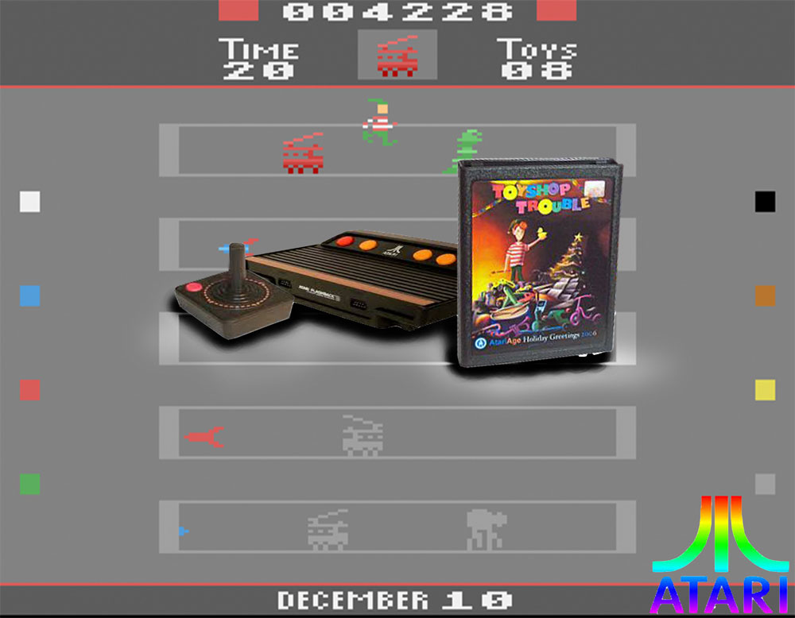
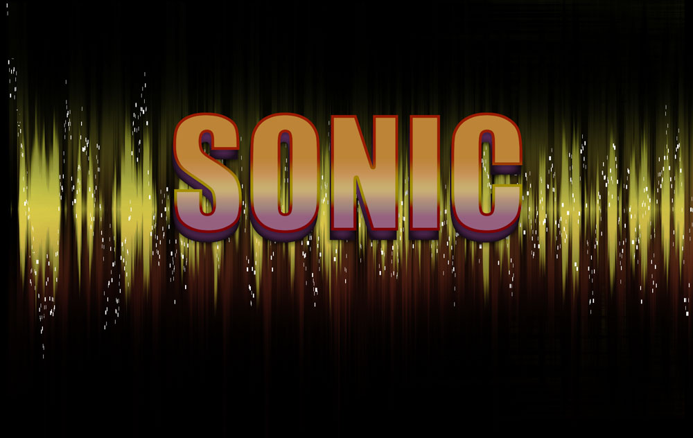

Photoshop
I was to choose five separate images: a game console, control, game, logo, and background. My task was to photoshop them together successfully. Then add shadows where necessary.
I was given the job of intertwining earbuds in the lettering and adding headphones in the middle.
Here I was taught step by step how to create waves out of a straight line of color. I also learned how to successfully use the gradient tool and add a letter shadow.
